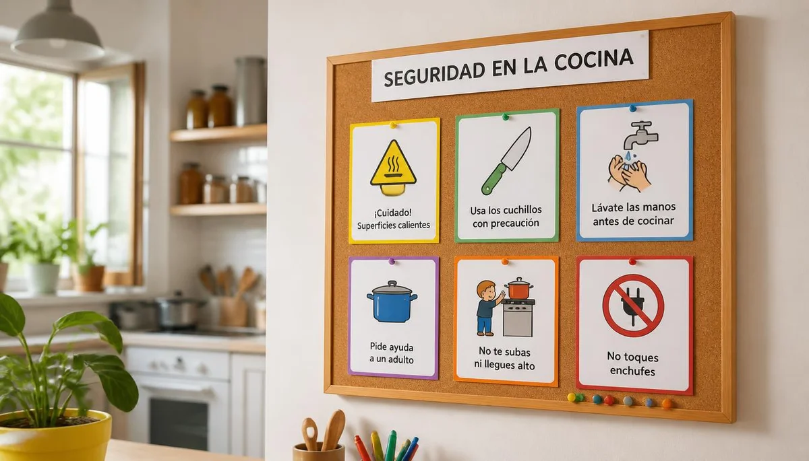

Quemaduras e intoxicaciones: Medidas para evitar accidentes domésticos
El hogar es el principal espacio donde la infancia explora y descubre el mundo, lo que a su vez conlleva riesgos potenciales que se pueden prevenir. Anticiparse a los peligros relacionados con fuentes de calor, productos químicos y sustancias peligrosas aporta seguridad y tranquilidad en la crianza. Pincha en cada tarjeta para profundizar en cada tema.

Un entorno seguro: la base de la prevención
Una mirada general sobre cómo adaptar los espacios cotidianos para acompañar la curiosidad infantil minimizando riesgos.

Prevención de quemaduras en la cocina
Pautas clave para el manejo seguro de líquidos calientes, fuegos, hornos y superficies de riesgo al cocinar en familia.

Almacenaje seguro de químicos y productos
Cómo guardar adecuadamente detergentes, lejías y sustancias tóxicas fuera del alcance y la curiosidad de los niños.
Control y seguridad con medicamentos en casa
Pautas rigurosas para evitar confusiones, almacenar botiquines bajo llave y prevenir ingestas accidentales de fármacos.
Plantas ornamentales y riesgos ocultos
Identificación de especies vegetales potencialmente tóxicas o irritantes dentro de la vivienda y zonas comunes.
Cómo actuar ante una quemadura leve
Protocolo de actuación inmediata (agua templada/fresca, exclusión de remedios caseros erróneos) y señales de alarma.

Protocolo ante sospecha de intoxicación
Qué hacer, qué evitar estrictamente (como provocar el vómito) y cuándo contactar urgentemente con toxicología o emergencias.

Educar en la prevención sin miedo
Cómo transmitir normas claras de seguridad a los menores fomentando su autonomía responsable sin generar temores paralizantes.
🌱 Continúa profundizando en la salud y el bienestar infantil
Para acompañar la crianza y los hábitos de seguridad de forma completa, te sugerimos explorar estos recursos:
- 🧭 Explora la guía relacionada: Vacunación infantil: Calendario oficial y aclaración de mitos
- 🎙️ Escucha el podcast: Límites con amor y regulación emocional (Ep. 07)